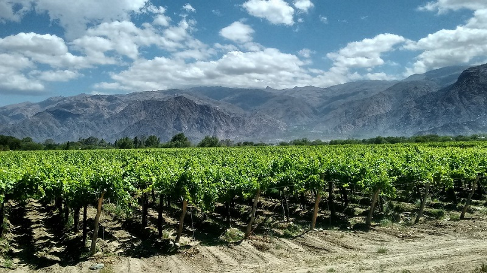
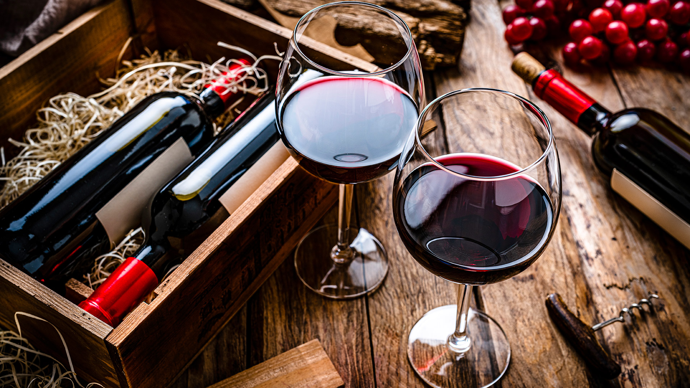

Bienvenidxs al mundo mágico del Vino
Les vamos a estar brindando información del Vino, lugares donde visitar y conocer viñedos, y por supuesto dónde pueden degustar la bebida nacional que nos representa.
¡Comencemos!
Historia del Vino
Nuestra vitivinicultura cuenta con más de cinco siglos de historia, integrando los saberes de los pueblos originarios con la tradición de los inmigrantes europeos, y representa la industria del sector más importante de América del Sur.
Comenzó a producirse en Santiago del Estero, a partir de las cepas Moscatel y Uva País, procedentes de España. La expansión de su cultivo siguió de la mano de los jesuitas y hacia 1598 había viñedos en Córdoba, Santa Fe, Buenos Aires y Misiones.

Por su parte, Mendoza y San Juan devinieron en sitios claves, ya que por allí ingresaban al territorio las vides provenientes de Chile que ya contaba por entonces con una fuerte producción vitivinícola. Años más tarde, Domingo Faustino Sarmiento introdujo la Malbec desde Francia, que si bien en ese país se usaba para hacer de vino de corte (se la mezclaba con otras varietales nada más que para darle color), en el nuestro se aclimató rápidamente con excelentes resultados. Hoy se ha posicionado como la cepa emblemática de la Argentina y cuenta con más de 43.000 hectáreas plantadas.

Hace 20 años la superficie cultivada con vides en el territorio argentino la concentraban Mendoza y San Juan. Hoy, la vitivinicultura argentina se extiende en 19 provincias, casi la totalidad del territorio nacional y con una calidad del vino alta, aún con condiciones de suelo y clima que, en algunos casos, son desventajosas.
Hay 223.585 hectáreas cultivadas con viñedos: Malbec, Cereza, Bonarda, Criolla Grande, Cabernet Sauvignon, Syrah, Pedro Giménez, lo que representa el 3% de la superficie mundial y posiciona al país en el quinto lugar como productor de vinos en el ranking global.
Actualmente Argentina exporta vino a 127 países, siendo Estados Unidos, Reino Unido, Canadá, Brasil y Países Bajos los mayores importadores.